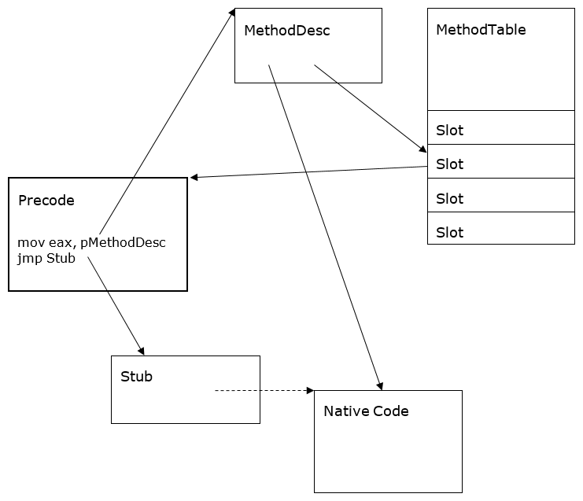

Method Descriptor
Author: Jan Kotas (@jkotas) - 2006
Introduction
MethodDesc (method descriptor) is the internal representation of a managed method. It serves several purposes:
- Provides a unique method handle, usable throughout the runtime. For normal methods, the MethodDesc is a unique handle for a
- Caches frequently used information that is expensive to compute from metadata (e.g. whether the method is static).
- Captures the runtime state of the method (e.g. whether the code has been generated for the method already).
- Owns the entry point of the method.
Design Goals and Non-goals
Goals
Performance: The design of MethodDesc is heavily optimized for size, since there is one of them for every method. For example, the MethodDesc for a normal non-generic method is 8 bytes in the current design.
Non-goals
Richness: The MethodDesc does not cache all information about the method. It is expected that the underlying metadata has to be accessed for less frequently used information (e.g. method signature).
Design of MethodDesc
Kinds of MethodDescs
There are multiple kinds of MethodDescs:
IL
Used for regular IL methods.
Instantiated
Used for less common IL methods that have generic instantiation or that do not have preallocated slot in method table.
FCall
Internal methods implemented in unmanaged code. These are methods marked with MethodImplAttribute(MethodImplOptions.InternalCall) attribute, delegate constructors and tlbimp constructors.
PInvoke
P/Invoke methods. These are methods marked with DllImport attribute.
EEImpl
Delegate methods whose implementation is provided by the runtime (Invoke, BeginInvoke, EndInvoke). See ECMA 335 Partition II - Delegates.
Array
Array methods whose implementation is provided by the runtime (Get, Set, Address). See ECMA Partition II – Arrays.
ComInterop
COM interface methods. Since the non-generic interfaces can be used for COM interop by default, this kind is usually used for all interface methods.
Dynamic
Dynamically created methods without underlying metadata. Produced by Stub-as-IL and LKG (light-weight code generation).
Alternative Implementations
Virtual methods and inheritance would be the natural way to implement various kinds of MethodDesc in C++. The virtual methods would add vtable pointer to each MethodDesc, wasting a lot of precious space. The vtable pointer occupies 4 bytes on x86. Instead, the virtualization is implemented by switching based on the MethodDesc kind, which fits into 3 bits. For example:
DWORD MethodDesc::GetAttrs()
{
if (IsArray())
return ((ArrayMethodDesc*)this)->GetAttrs();
if (IsDynamic())
return ((DynamicMethodDesc*)this)->GetAttrs();
return GetMDImport()->GetMethodDefProps(GetMemberDef());
}
Method Slots
Each MethodDesc has a slot, which contains the current entry point of the method. The slot must exist for all methods, even the ones that never run like abstract methods. There are multiple places in the runtime that depend on mapping between entry points and MethodDescs.
Each MethodDesc logically has an entry point, but we do not allocate these eagerly at MethodDesc creation time. The invariant is that once the method is identified as a method to run, or is used in virtual overriding, we will allocate the entrypoint.
The slot is either in MethodTable or in MethodDesc itself. The location of the slot is determined by mdcHasNonVtableSlot bit on MethodDesc.
The slot is stored in MethodTable for methods that require efficient lookup via slot index, e.g. virtual methods or methods on generic types. The MethodDesc contains the slot index to allow fast lookup of the entry point in this case.
Otherwise, the slot is part of the MethodDesc itself. This arrangement improves data locality and saves working set. Also, it is not even always possible to preallocate a slot in a MethodTable upfront for dynamically created MethodDescs, such as for methods added by Edit & Continue, instantiations of generic methods or dynamic methods.
MethodDesc Chunks
The MethodDescs are allocated in chunks to save space. Multiple MethodDesc tend to have identical MethodTable and upper bits of metadata token. MethodDescChunk is formed by hoisting the common information in front of an array of multiple MethodDescs. The MethodDesc contains just the index of itself in the array.

Figure 1 MethodDescChunk and MethodTable
Debugging
The following SOS commands are useful for debugging MethodDesc:
-
DumpMD – dump the MethodDesc content:
!DumpMD 00912fd8 Method Name: My.Main() Class: 009111ec MethodTable: 00912fe8md Token: 06000001 Module: 00912c14 IsJitted: yes CodeAddr: 00ca0070 -
IP2MD – find MethodDesc for given code address:
!ip2md 00ca007c MethodDesc: 00912fd8 Method Name: My.Main() Class: 009111ec MethodTable: 00912fe8md Token: 06000001 Module: 00912c14 IsJitted: yes CodeAddr: 00ca0070 -
Name2EE – find MethodDesc for given method name:
!name2ee hello.exe My.Main Module: 00912c14 (hello.exe) Token: 0x06000001 MethodDesc: 00912fd8 Name: My.Main() JITTED Code Address: 00ca0070 -
Token2EE – find MethodDesc for given token (useful for finding MethodDesc for methods with weird names):
!token2ee hello.exe 0x06000001 Module: 00912c14 (hello.exe) Token: 0x06000001 MethodDesc: 00912fd 8Name: My.Main() JITTED Code Address: 00ca0070 -
DumpMT – MD – dump all MethodDescs in the given MethodTable:
!DumpMT -MD 0x00912fe8 ... MethodDesc Table Entry MethodDesc JIT Name 79354bec 7913bd48 PreJIT System.Object.ToString() 793539c0 7913bd50 PreJIT System.Object.Equals(System.Object) 793539b0 7913bd68 PreJIT System.Object.GetHashCode() 7934a4c0 7913bd70 PreJIT System.Object.Finalize() 00ca0070 00912fd8 JIT My.Main() 0091303c 00912fe0 NONE My..ctor()
A MethodDesc has fields with the name and signature of the method on debug builds. This is useful for debugging when the runtime state is severely corrupted and the SOS extension does not work.
Precode
The precode is a small fragment of code used to implement temporary entry points and an efficient wrapper for stubs. Precode is a niche code-generator for these two cases, generating the most efficient code possible. In an ideal world, all native code dynamically generated by the runtime would be produced by the JIT. That's not feasible in this case, given the specific requirements of these two scenarios. The basic precode on x86 may look like this:
mov eax,pMethodDesc // Load MethodDesc into scratch register
jmp target // Jump to a target
Efficient Stub wrappers: The implementation of certain methods (e.g. P/Invoke, delegate invocation, multidimensional array setters and getters) is provided by the runtime, typically as hand-written assembly stubs. Precode provides a space-efficient wrapper over stubs, to multiplex them for multiple callers.
The worker code of the stub is wrapped by a precode fragment that can be mapped to the MethodDesc and that jumps to the worker code of the stub. The worker code of the stub can be shared between multiple methods this way. It is an important optimization used to implement P/Invoke marshalling stubs. It also creates a 1:1 mapping between MethodDescs and entry points, which establishes a simple and efficient low-level system.
Temporary entry points: Methods must provide entry points before they are jitted so that jitted code has an address to call them. These temporary entry points are provided by precode. They are a specific form of stub wrappers.
This technique is a lazy approach to jitting, which provides a performance optimization in both space and time. Otherwise, the transitive closure of a method would need to be jitted before it was executed. This would be a waste, since only the dependencies of taken code branches (e.g. if statement) require jitting.
Each temporary entry point is much smaller than a typical method body. They need to be small since there are a lot of them, even at the cost of performance. The temporary entry points are executed just once before the actual code for the method is generated.
The target of the temporary entry point is a PreStub, which is a special kind of stub that triggers jitting of a method. It atomically replaces the temporary entry point with a stable entry point. The stable entry point has to remain constant for the method lifetime. This invariant is required to guarantee thread safety since the method slot is always accessed without any locks taken.
The stable entry point is either the native code or the precode. The native code is either jitted code or code saved in NGen image. It is common to talk about jitted code when we actually mean native code.

Figure 2 Entry Point State Diagram
A method can have both native code and precode if there is a need to do work before the actual method body is executed. This situation typically happens for NGen image fixups. Native code is an optional MethodDesc slot in this case. This is necessary to lookup the native code of the method in a cheap uniform way.

Figure 3 The most complex case of Precode, Stub and Native Code
Single Callable vs. Multi Callable entry points
Entry point is needed to call the method. The MethodDesc exposes methods that encapsulate logic to get the most efficient entry point for the given situation. The key difference is whether the entry point will be used to call the method just once or whether it will be used to call the method multiple times.
For example, it may be a bad idea to use the temporary entry point to call the method multiple times since it would go through the PreStub each time. On the other hand, using temporary entry point to call the method just once should be fine.
The methods to get callable entry points from MethodDesc are:
MethodDesc::GetSingleCallableAddrOfCodeMethodDesc::GetMultiCallableAddrOfCodeMethodDesc::TryGetMultiCallableAddrOfCodeMethodDesc::GetSingleCallableAddrOfVirtualizedCodeMethodDesc::GetMultiCallableAddrOfVirtualizedCode
Types of precode
There are multiple specialized types of precodes.
The type of precode has to be cheaply computable from the instruction sequence. On x86 and x64, the type of precode is computed by fetching a byte at a constant offset. Of course, this imposes limits on the instruction sequences used to implement the various precode types.
StubPrecode
StubPrecode is the basic precode type. It loads MethodDesc into a scratch register2 and then jumps. It must be implemented for precodes to work. It is used as fallback when no other specialized precode type is available.
All other precodes types are optional optimizations that the platform specific files turn on via HAS_XXX_PRECODE defines.
StubPrecode looks like this on x86:
mov eax,pMethodDesc
mov ebp,ebp // dummy instruction that marks the type of the precode
jmp target
"target" points to prestub initially. It is patched to point to the final target. The final target (stub or native code) may or may not use MethodDesc in eax. Stubs often use it, native code does not use it.
FixupPrecode
FixupPrecode is used when the final target does not require MethodDesc in scratch register2. The FixupPrecode saves a few cycles by avoiding loading MethodDesc into the scratch register.
Most stubs used are the more efficient form, we currently can use this form for everything but interop methods when a specialized form of Precode is not required.
The initial state of the FixupPrecode on x86:
call PrecodeFixupThunk // This call never returns. It pops the return address
// and uses it to fetch the pMethodDesc below to find
// what the method that needs to be jitted
pop esi // dummy instruction that marks the type of the precode
dword pMethodDesc
Once it has been patched to point to final target:
jmp target
pop edi
dword pMethodDesc
2 Passing MethodDesc in scratch register is sometimes referred to as MethodDesc Calling Convention.
ThisPtrRetBufPrecode
ThisPtrRetBufPrecode is used to switch a return buffer and the this pointer for open instance delegates returning valuetypes. It is used to convert the calling convention of MyValueType Bar(Foo x) to the calling convention of MyValueType Foo::Bar().
This precode is always allocated on demand as a wrapper of the actual method entry point and stored in a table (FuncPtrStubs).
ThisPtrRetBufPrecode looks like this:
mov eax,ecx
mov ecx,edx
mov edx,eax
nop
jmp entrypoint
dw pMethodDesc
PInvokeImportPrecode
PInvokeImportPrecode is used for lazy binding of unmanaged P/Invoke targets. This precode is for convenience and to reduce amount of platform specific plumbing.
Each PInvokeMethodDesc has PInvokeImportPrecode in addition to the regular precode.
PInvokeImportPrecode looks like this on x86:
mov eax,pMethodDesc
mov eax,eax // dummy instruction that marks the type of the precode
jmp PInvokeImportThunk // loads P/Invoke target for pMethodDesc lazily